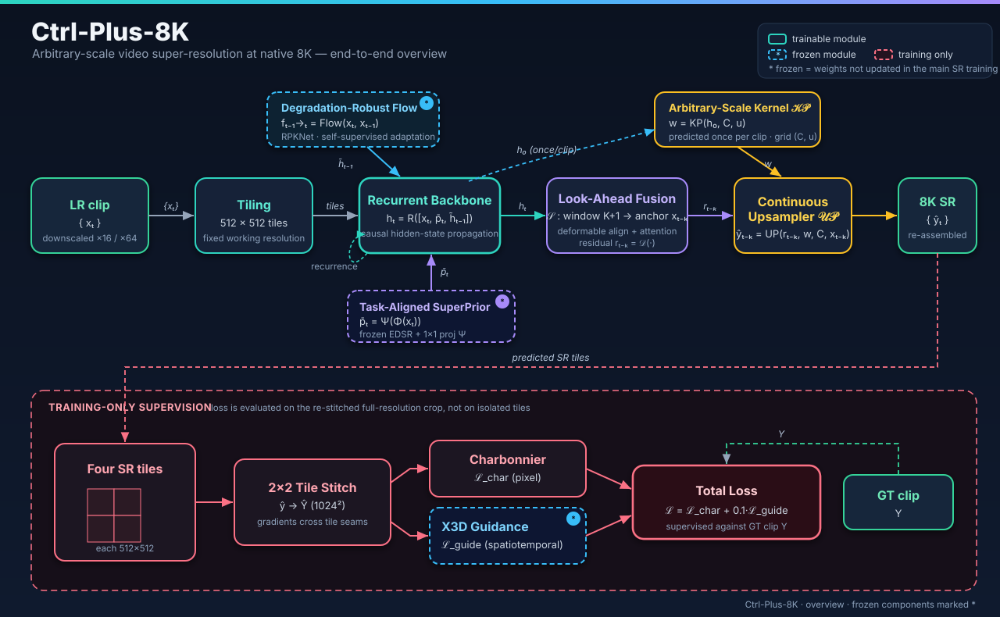
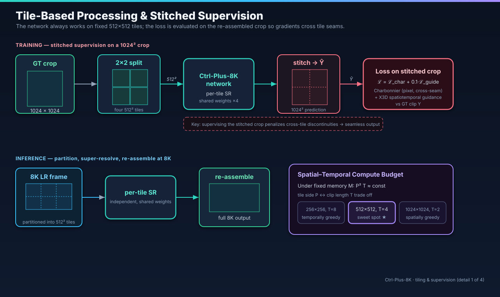
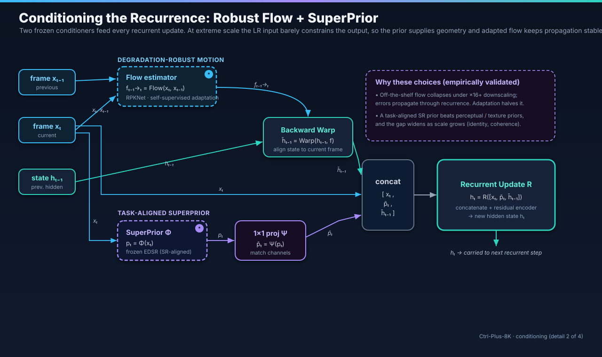
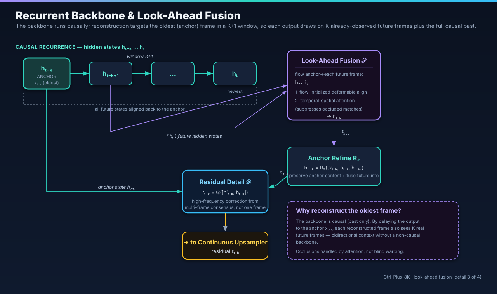
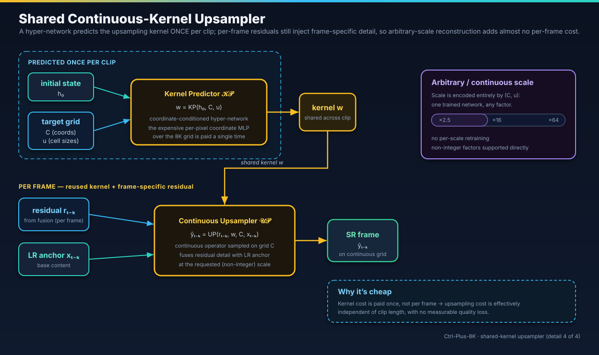
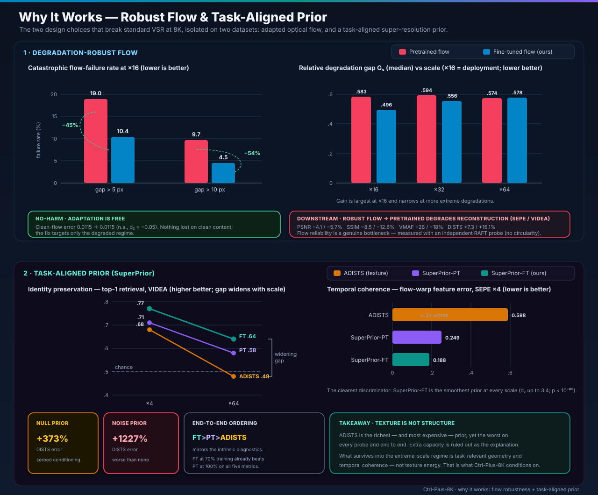

Paper ID: XXXX · Under Review
We introduce the first extreme, arbitrary-scale video super-resolution framework for native 8K. Because standard methods fail at extreme magnifications, we utilize a degradation-robust flow estimator, task-aligned priors, and continuous grid reconstruction. Our framework outperforms eight baselines in perceptual quality while remaining the most compact model, maintaining a constant per-frame cost across all scale factors.
While 8K displays are mainstream, current video super-resolution (VSR) methods fail at native 8K because optical flow collapses and perceptual priors hallucinate textures under extreme magnification. We present the first arbitrary-scale VSR framework designed specifically for native 8K. To overcome these failures, our method combines tile-based recurrent processing with clip-level guidance, conditioned on a degradation-robust flow estimator and a task-aligned structural prior. By predicting a continuous-grid kernel once per clip, arbitrary-scale upsampling incurs nearly zero per-frame cost. Across two 8K benchmarks, our highly compact model outperforms eight state-of-the-art baselines, survives a ×64 stress test, and generalizes to real-world video without adaptation.
Pick a dataset, click a highlighted region of the 8K frame, then compare every method on that crop. Choose Flip to toggle two methods in place, or Slider to split them left/right or top/bottom. Zoom for detail; step frame-by-frame for temporal artifacts.
A walkthrough of the framework: how a full 8K frame is processed as fixed tiles, conditioned on robust motion and a task-aligned prior, and reconstructed at any scale with a kernel predicted once per clip. The two failures that break standard VSR at 8K are isolated at the end.

01 · Overview The full pipeline. A downscaled 8K clip is split into fixed 512-px tiles; a recurrent backbone, conditioned on flow and a super-resolution prior, feeds a continuous-scale upsampler, and the loss is applied on the re-stitched crop rather than on isolated tiles.

02 · Tiling Why the tiles do not tear. The network always runs on fixed 512-px tiles for constant memory, but training supervises the re-assembled crop with a clip-level guidance term that restores the long-range and temporal context per-tile processing discards, keeping the 8K output seamless.

03 · Conditioning Conditioning the recurrence. At extreme downscaling the low-res input barely constrains the output, so every recurrent update is fed two frozen conditioners: a degradation-robust flow estimator for stable motion, and a task-aligned super-resolution prior for geometry.

04 · Look-Ahead Bidirectional context from a causal backbone. Each output targets the oldest frame in a K+1 window, so it also sees K already-observed future frames without an anti-causal pass, with occlusions resolved by attention rather than blind warping.

05 · Upsampler Arbitrary scale, almost free. The upsampling kernel is predicted once per clip and shared across frames, while per-frame residuals add the detail, so non-integer and extreme scale factors add almost no per-frame cost.

06 · Why it works The two failures we fix. On two independent 8K datasets, off-the-shelf flow collapses and propagates catastrophic motion errors, and high-level texture priors actively mislead; adapting the flow and using a task-aligned prior removes both, and the gap widens as scale grows.